应用软件使用及作业提交¶
module基本使用¶
Module中一个比较重要的文件modulefile文件，每个软件都需要有对应的modulefile文件，里面定义了该软件所需要的所有环境变量、软件说明、依赖的其他软件和库文件等，需要使用该软件时，我们用相关命令载入该modulefile文件，即可载入该软件的所有环境变量、依赖软件和库文件等。下面是module常用的一些命令：
-
module available列出所有可使用的软件。可以用module av简写来代替，同时module av支持模糊搜索，例如module av m会列出所有以m开头的软件 -
module load modulefile加载某个软件 -
module unload modulefile卸载某个软件 -
module purge清除所有已经加载的软件 -
module list列出目前已经加载的软件 -
module show modulefile列出某个软件modulefile里的内容 -
module switch|swap [modulefile_old][modulefile_new]在不同的软件版本之间切换
singularity¶
容器作为轻量级的虚拟机，可在主机之外提供多种系统环境选择，如某些软件可能只在某个linux发行版本上运行；另外，在容器中一次打包好软件及相关依赖环境之后，即可将复杂的软件环境在各种平台上无缝运行，无需重复多次配置，大大减轻相关工作人员的工作量；因为可以利用容器技术在一台物理机器上部署大量不同的系统（一台物理机支持的容器远多于传统虚拟机），提高了资源利用率，因此在近几年变得非常流行。目前主流的容器为docker，其最初被用于软件产品需要快速迭代的互联网行业，极大地简化了系统部署、提高了硬件资源的利用率，近来也在各种特定领域的应用系统中被使用。
singularity 调用
singularity有许多命令，常用的命令有，pull、run、exec、shell、build
-
pull: 从给定的URL下载容器镜像，常用的有URL有Docker Hub(docker://user/image:tag) 和 Singularity Hub(shub://user/image:tag)，如singularity pull tensorflow.sif docker://tensorflow/tensorflow:latest -
run: 执行预定义的命令 -
exec: 在容器中执行某个命令singularity exec docker://tensorflow/tensorflow:latest python example.py或
singularity exec tensorflow.sif python example.py -
shell: 进入容器中的shellsingularity shell docker://tensorflow/tensorflow:latest或
singularity shell tensorflow.sif然后可在容器的shell中运行自己的程序
-
build: 创建容器镜像
脚本¶
脚本文件放于/public/slurmscript_demo中，手册中列出部分常见的脚本
abaqus¶
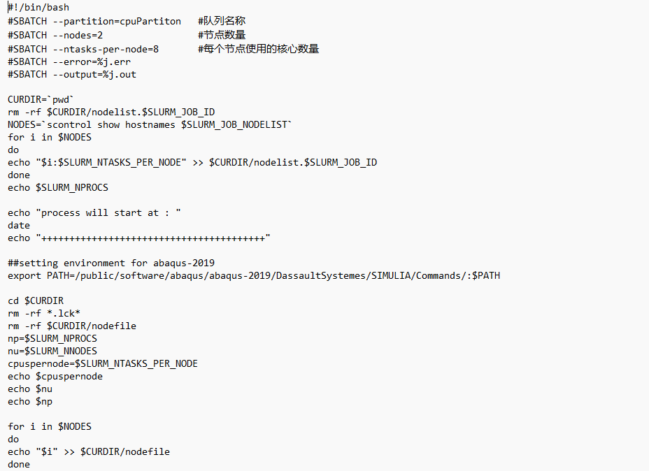 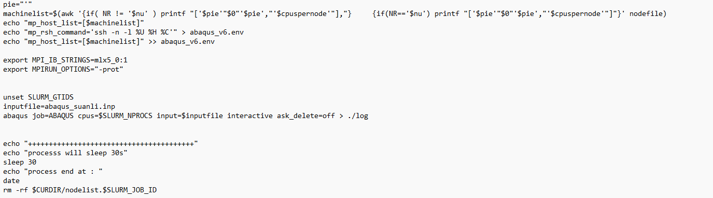
amber¶

lammps¶
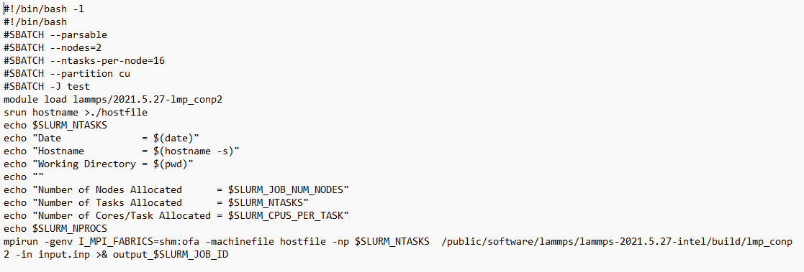
lammps-intel¶
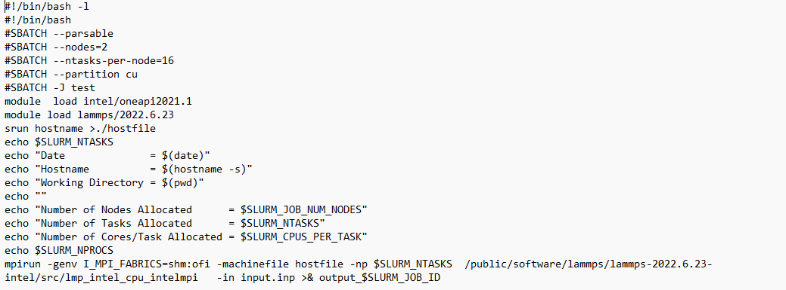
orca¶
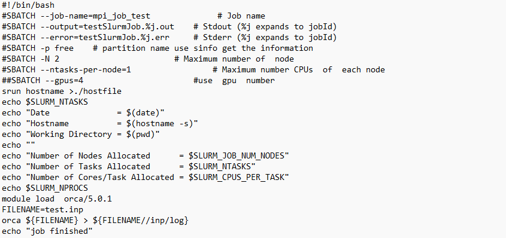
gromacs-gpu¶
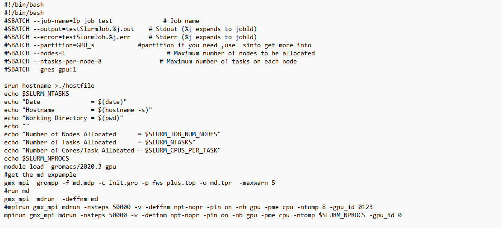
gromacs-cpu¶
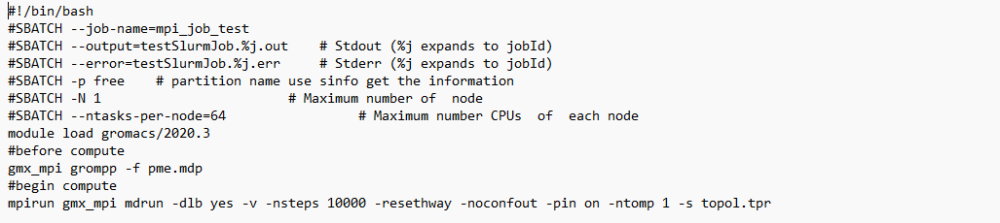
matlab¶
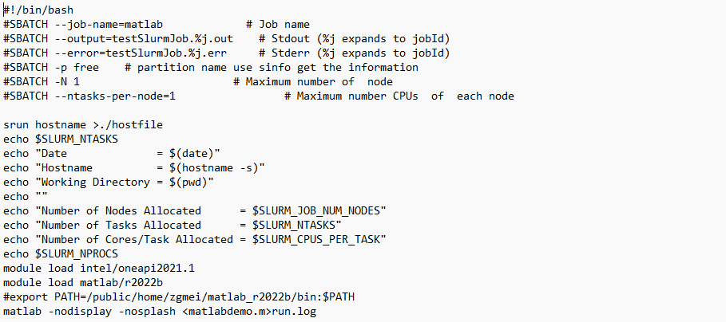
comsol¶
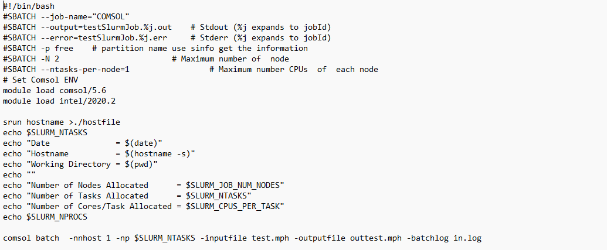
cp2k-2022¶
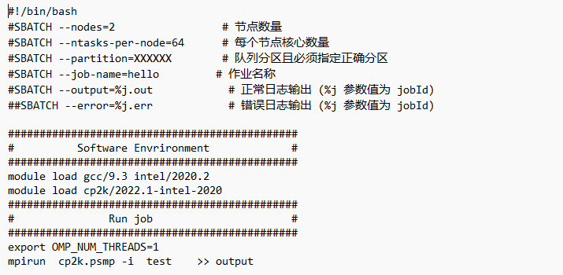
vasp¶
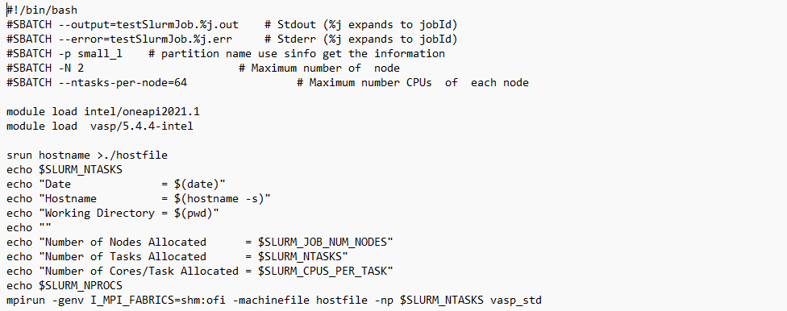
g16¶
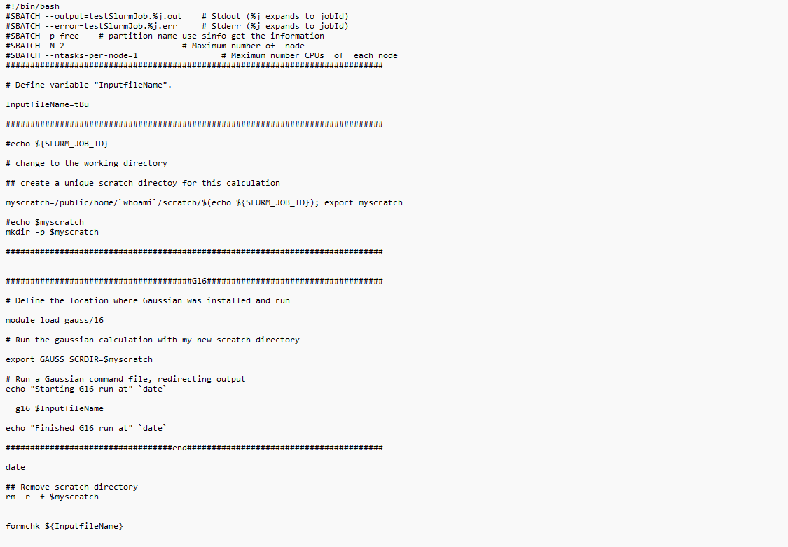